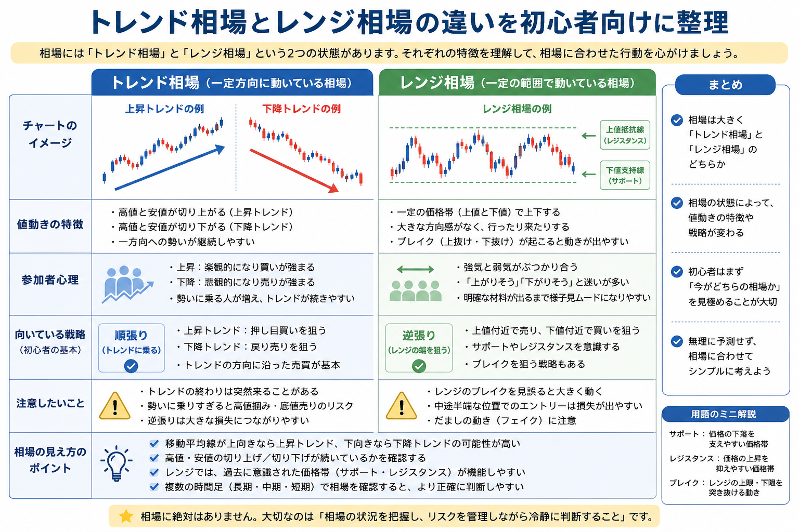

Introduction
まずは相場の状態を分けて考える

チャート分析では、いきなり「上がるか下がるか」を当てようとするより、まず現在の相場がどのような状態に近いかを整理することが大切です。 同じ値動きでも、トレンド相場なのかレンジ相場なのかによって、見え方や注意点は変わります。
株のチャート全体の読み方を先に確認したい場合は、株チャートの見方を初心者向けに解説も参考になります。
Trend Market
トレンド相場とは？
トレンド相場とは、価格が一定方向へ動きやすい状態のことです。 大きく分けると、価格が上方向へ進みやすい「上昇トレンド」と、下方向へ進みやすい「下降トレンド」があります。
Up Trend
上昇トレンドとは？
上昇トレンドは、価格が上方向へ進みやすい状態です。 初心者向けに言えば、下がっても前回より高い位置で止まり、再び上を目指すような値動きが続くイメージです。 高値や安値が少しずつ切り上がっているかを観察すると、流れをつかみやすくなります。
Down Trend
下降トレンドとは？
下降トレンドは、価格が下方向へ進みやすい状態です。 一時的に反発しても前回の高値を超えられず、再び下落するような値動きが続く場合があります。 安く見えるからといってすぐ買うのではなく、相場全体の流れを確認することが重要です。
ローソク足の並び方や陽線・陰線の意味を確認したい場合は、ローソク足の見方を初心者向けに解説も合わせて読むと理解しやすくなります。
Range Market
レンジ相場とは？
レンジ相場とは、価格が一定の範囲内で上下している状態です。 上にも下にも明確な方向感が出にくく、同じような価格帯で反発を繰り返すことがあります。
- 上限付近では上値が重くなりやすい
- 下限付近では下げ止まりやすいことがある
- ただし、いつまでも同じ範囲に収まるとは限らない
- レンジを抜けた後に大きく動く場合もある
レンジ相場は、方向感がないから簡単という意味ではありません。 範囲内の動きだと思っていたものが、突然トレンドへ移ることもあるため、決めつけずに観察する姿勢が大切です。
Comparison
トレンド相場とレンジ相場の違い
| 比較項目 | トレンド相場 | レンジ相場 |
|---|---|---|
| 値動きの特徴 | 一定方向へ動きやすい | 一定範囲内で上下しやすい |
| 参加者心理 | 流れに乗りたい人が増えやすい | 上限・下限を意識する人が増えやすい |
| チャートの見え方 | 高値・安値の切り上げ、または切り下げが見られやすい | 同じ価格帯で反発を繰り返しやすい |
| 初心者の注意点 | 逆張りだけで判断しない | 飛び乗りやレンジ抜けの見誤りに注意 |
値動きの特徴
トレンド相場では、価格が一方向へ進みやすい流れが見られます。 レンジ相場では、上限と下限のような価格帯が意識され、範囲内で上下しやすくなります。
参加者心理の違い
トレンド相場では「流れに乗りたい」という心理が強まりやすく、レンジ相場では「高いところでは売られやすい」「安いところでは買われやすい」といった意識が出やすくなります。
チャートの見え方
トレンド相場では、高値や安値の位置が少しずつ変化していく点に注目します。 レンジ相場では、過去に反発した価格帯や止まりやすい水準が意識されます。 サポートラインやダブルトップなどの基本を知りたい場合は、チャートのサインを初心者向けに解説も参考になります。
初心者が意識したいポイント
大切なのは、トレンドかレンジかを一度で正確に当てることではありません。 「今はどちらに近いか」「自分の売買判断は相場状況と合っているか」を確認する習慣を持つことです。
Importance
なぜ相場状況を把握することが重要なのか？
エントリー判断に役立つ
今がトレンド寄りなのかレンジ寄りなのかを確認すると、勢いに乗る場面なのか、様子を見る場面なのかを考えやすくなります。 買うタイミングの基本は、株はいつ買えばいい？でも整理しています。
リスク管理に繋がる
相場状況を見ずに売買すると、損切りや利益確定の判断が感情的になりやすくなります。 事前の基準を作る意味では、投資ルールを決める重要性とは？も重要です。
無理な売買を減らせる
「今は分かりにくい相場かもしれない」と考えられるだけでも、焦ったエントリーを減らしやすくなります。
相場に合わせた考え方ができる
トレンド相場とレンジ相場では、値動きの見方が異なります。 どちらか一方の考え方に固定せず、相場に合わせて考えることが大切です。
Common Mistakes
初心者がやりがちな失敗
トレンド相場で逆張りばかりする
上昇や下降の流れが続いているのに、「そろそろ反転するはず」と考えて逆方向ばかり狙うと、損失が大きくなることがあります。
レンジ相場で飛び乗る
レンジの上限付近で上昇に飛び乗ると、その後に反落する可能性があります。 逆に下限付近で慌てて売ると、反発に巻き込まれることもあります。
相場状況を確認せずに売買する
ニュースやSNSの雰囲気だけで判断すると、チャート上の状況を見落としやすくなります。 売買前には、少なくとも現在の流れと価格帯を確認したいところです。
短期的な値動きだけを見る
直近のローソク足だけを見ると、相場全体の流れを誤解することがあります。 短い時間軸だけでなく、少し広い視点でチャートを見ることも大切です。
Mindset
初心者が覚えておきたい考え方
-
相場に絶対はない
トレンドに見えても急に反転することがあります。レンジに見えても突然抜けることがあります。
-
未来を予測するための記事ではない
この記事の目的は、次に上がるか下がるかを当てることではなく、現在の相場状況を整理することです。
-
まずは現在の状況を把握する
いきなり売買判断をするのではなく、価格がどの範囲で動いているか、どちらの方向へ流れが出ているかを確認しましょう。
-
相場に合わせて冷静に判断する
自分の思い込みではなく、チャートの状態と事前に決めたルールをもとに判断することが大切です。
Summary
まとめ
トレンド相場とレンジ相場は、チャート分析の基礎になる考え方です。 トレンド相場では一定方向へ価格が動きやすく、レンジ相場では一定範囲内で上下しやすいという違いがあります。
相場状況を把握することは、エントリー判断やリスク管理にも役立ちます。 初心者は、まず相場を観察する習慣を身につけ、無理な売買を避けることを意識しましょう。 損失を小さくし利益を伸ばす考え方は、損小利大とは？でも整理しています。 売る判断の基本を確認したい場合は、株はいつ売ればいい？も参考になります。
Related Articles
あわせて読みたい関連記事
よくある質問
-
Q. トレンド相場とは何ですか？
トレンド相場とは、価格が一定方向へ動きやすい相場のことです。上方向なら上昇トレンド、下方向なら下降トレンドと呼ばれます。 -
Q. レンジ相場とは何ですか？
レンジ相場とは、価格が一定の範囲内で上下し、明確な方向感が出にくい相場のことです。 -
Q. 今がトレンドかレンジかはどう判断しますか？
高値と安値の切り上げ・切り下げ、一定範囲での反発、ローソク足の並び、サポートラインやレジスタンスラインなどを組み合わせて確認します。ただし、確実に判断できるものではありません。 -
Q. 初心者はどちらの相場を意識すべきですか？
どちらが有利と決めつけるのではなく、まず現在の相場がトレンド寄りかレンジ寄りかを観察する習慣が大切です。
一般ユーザー目線の体験でおすすめの会社をご紹介

ご利用にあたっての注意事項
本記事は情報提供を目的としており、投資の勧誘を目的としたものではありません。株式・投資信託・外国証券・FX等の取引は元本保証がなく、相場変動等により損失が生じる場合があります。取引開始前に、契約締結前交付書面や商品説明書、目論見書等を必ずご確認のうえ、ご自身の判断と責任でお取引ください。